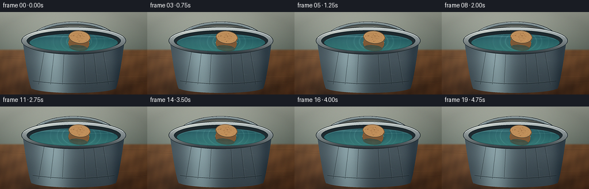
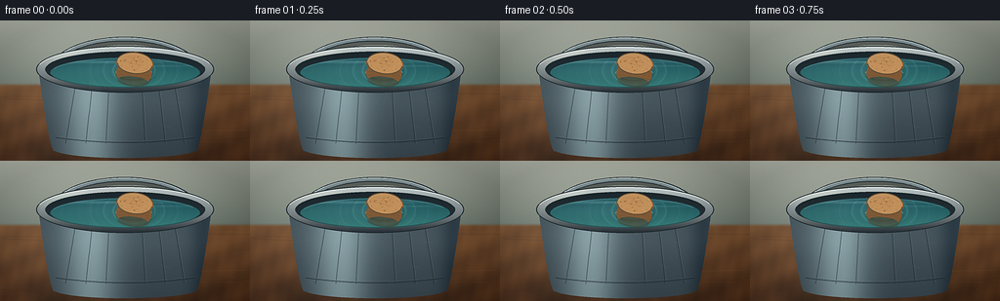

CODING AGENTS AS PIXEL WORLD MODELS
traex/DeepSeek-V4.1-Flash · mechanics_0009
点击播放 · 原生 RGB 像素
逐轮保存的候选
回放视频、检查图与代码变化。
每份候选均可单独播放。实际图片检查记录在下方工具轨迹中。
候选 01播放与检查图
点击播放 · 原生 RGB 像素


展开代码变化
--- 上一保存版本
+++ 本次保存版本
@@ -0,0 +1,483 @@
+from pathlib import Path
+import math
+
+import imageio.v2 as imageio
+import numpy as np
+from PIL import Image, ImageDraw, ImageFilter
+
+import artifact_io
+
+
+W, H, N, FPS = 256, 144, 20, 4.0
+SS = 4
+HW, HH = W * SS, H * SS
+CASE = Path(__file__).resolve().parent
+
+
+def rgba(rgb, alpha=255):
+ return (int(rgb[0]), int(rgb[1]), int(rgb[2]), int(alpha))
+
+
+def scaled_box(cx, cy, rx, ry):
+ return [
+ (cx - rx) * SS,
+ (cy - ry) * SS,
+ (cx + rx) * SS,
+ (cy + ry) * SS,
+ ]
+
+
+def ellipse_mask(cx, cy, rx, ry):
+ mask = Image.new("L", (HW, HH), 0)
+ ImageDraw.Draw(mask).ellipse(scaled_box(cx, cy, rx, ry), fill=255)
+ return np.asarray(mask, dtype=np.float32) / 255.0
+
+
+def polygon_mask(points):
+ mask = Image.new("L", (HW, HH), 0)
+ ImageDraw.Draw(mask).polygon([(x * SS, y * SS) for x, y in points], fill=255)
+ return np.asarray(mask, dtype=np.float32) / 255.0
+
+
+def blend_region(canvas, color, alpha):
+ alpha = np.clip(alpha, 0.0, 1.0)[..., None]
+ canvas[:] = canvas * (1.0 - alpha) + color * alpha
+
+
+def add_pil_layer(canvas, layer):
+ rgba_layer = np.asarray(layer, dtype=np.float32)
+ alpha = rgba_layer[..., 3:4] / 255.0
+ canvas[:] = canvas * (1.0 - alpha) + rgba_layer[..., :3] * alpha
+
+
+def cubic_bezier(p0, p1, p2, p3, count=100):
+ result = []
+ for i in range(count):
+ t = i / (count - 1)
+ u = 1.0 - t
+ x = u**3 * p0[0] + 3 * u**2 * t * p1[0] + 3 * u * t**2 * p2[0] + t**3 * p3[0]
+ y = u**3 * p0[1] + 3 * u**2 * t * p1[1] + 3 * u * t**2 * p2[1] + t**3 * p3[1]
+ result.append((x * SS, y * SS))
+ return result
+
+
+def make_background(rng):
+ yy, xx = np.mgrid[0:HH, 0:HW].astype(np.float32)
+ x = xx / SS
+ y = yy / SS
+
+ # Soft neutral wall and a broad, warm oak workbench.
+ wall_t = np.clip(y / 70.0, 0.0, 1.0)
+ wall = np.empty((HH, HW, 3), dtype=np.float32)
+ wall[..., 0] = 175 - 61 * wall_t
+ wall[..., 1] = 180 - 55 * wall_t
+ wall[..., 2] = 166 - 52 * wall_t
+ wall += (14.0 * np.exp(-((x - 55) / 80) ** 2))[..., None]
+ wall -= (12.0 * np.clip((x - 180) / 75, 0, 1))[..., None]
+
+ table_t = np.clip((y - 63) / 81.0, 0.0, 1.0)
+ grain = (
+ 5.5 * np.sin(x * 0.095 + y * 0.21)
+ + 2.5 * np.sin(x * 0.23 - y * 0.07)
+ + 1.8 * np.sin(x * 0.51 + y * 0.11)
+ )
+ table = np.empty_like(wall)
+ table[..., 0] = 119 - 42 * table_t + grain
+ table[..., 1] = 82 - 35 * table_t + grain * 0.65
+ table[..., 2] = 50 - 24 * table_t + grain * 0.32
+ table += (18.0 * np.exp(-((x - 77) / 100) ** 2))[..., None]
+
+ horizon = np.clip((y - 64.0) / 3.5, 0.0, 1.0)[..., None]
+ canvas = wall * (1.0 - horizon) + table * horizon
+
+ # Sparse long wood fibers, mostly in the foreground corners.
+ layer = Image.new("RGBA", (HW, HH), (0, 0, 0, 0))
+ draw = ImageDraw.Draw(layer)
+ for _ in range(44):
+ y0 = rng.uniform(67, 145)
+ x0 = rng.uniform(-18, 275)
+ length = rng.uniform(30, 125)
+ bend = rng.uniform(-2.2, 2.2)
+ tone = rng.choice([(50, 31, 20), (164, 113, 70), (78, 47, 28)])
+ draw.line(
+ [(x0 * SS, y0 * SS), ((x0 + length * 0.55) * SS, (y0 + bend) * SS),
+ ((x0 + length) * SS, (y0 + bend * 0.3) * SS)],
+ fill=rgba(tone, rng.integers(12, 36)),
+ width=max(1, int(rng.uniform(0.6, 1.25) * SS)),
+ )
+ add_pil_layer(canvas, layer)
+
+ # Contact shadow and a soft cast shadow to anchor the bucket.
+ shadow = Image.new("L", (HW, HH), 0)
+ sd = ImageDraw.Draw(shadow)
+ sd.ellipse(scaled_box(132, 135, 102, 17), fill=180)
+ sd.ellipse(scaled_box(143, 130, 89, 25), fill=72)
+ shadow = shadow.filter(ImageFilter.GaussianBlur(7.0 * SS))
+ sh = np.asarray(shadow, dtype=np.float32) / 255.0
+ blend_region(canvas, np.array([31, 29, 25], dtype=np.float32), sh * 0.57)
+
+ # Gentle photographic falloff before the bucket is composited.
+ nx = (x - W / 2) / (W / 2)
+ ny = (y - H / 2) / (H / 2)
+ vignette = np.clip(1.0 - 0.095 * (nx**2 + ny**2), 0.88, 1.0)
+ canvas *= vignette[..., None]
+ return canvas
+
+
+def draw_handle(canvas):
+ shadow_layer = Image.new("RGBA", (HW, HH), (0, 0, 0, 0))
+ layer = Image.new("RGBA", (HW, HH), (0, 0, 0, 0))
+ sd = ImageDraw.Draw(shadow_layer)
+ d = ImageDraw.Draw(layer)
+
+ left = cubic_bezier((50, 61), (48, 5), (208, 5), (206, 61), 130)
+ right_shift = [(x + 2.0 * SS, y + 3.0 * SS) for x, y in left]
+ sd.line(right_shift, fill=rgba((24, 27, 28), 125), width=int(6.2 * SS), joint="curve")
+ d.line(left, fill=rgba((47, 57, 61), 255), width=int(5.2 * SS), joint="curve")
+ d.line(left, fill=rgba((123, 140, 143), 255), width=int(3.2 * SS), joint="curve")
+ highlight = [(x - 0.5 * SS, y - 1.2 * SS) for x, y in left]
+ d.line(highlight, fill=rgba((213, 224, 222), 205), width=int(0.9 * SS), joint="curve")
+ for p in (left[0], left[-1]):
+ d.ellipse((p[0] - 2.6 * SS, p[1] - 2.6 * SS, p[0] + 2.6 * SS, p[1] + 2.6 * SS),
+ fill=rgba((73, 86, 90), 255))
+ add_pil_layer(canvas, shadow_layer)
+ add_pil_layer(canvas, layer)
+
+
+def body_geometry():
+ left, right = [], []
+ for i in range(80):
+ t = i / 79
+ y = 47 + t * 87
+ half = 73 + 16 * (1 - t) ** 0.72
+ left.append((128 - half, y))
+ right.append((128 + half, y))
+ return left + right[::-1]
+
+
+def draw_bucket_body(canvas):
+ mask = polygon_mask(body_geometry())
+ bottom = ellipse_mask(128, 132, 73, 9)
+ mask = np.maximum(mask, bottom)
+
+ yy, xx = np.mgrid[0:HH, 0:HW].astype(np.float32)
+ x = xx / SS
+ y = yy / SS
+ rel = (x - 128) / 91.0
+ vertical = np.clip((y - 48) / 92, 0, 1)
+
+ # Brushed steel: cool base, bright left-of-center sheen, dark right edge.
+ base = np.empty((HH, HW, 3), dtype=np.float32)
+ base[..., 0] = 57 + 16 * (1 - vertical)
+ base[..., 1] = 70 + 18 * (1 - vertical)
+ base[..., 2] = 76 + 18 * (1 - vertical)
+ sheen = np.exp(-((rel + 0.39) / 0.31) ** 2)
+ edge = np.exp(-((rel - 0.89) / 0.15) ** 2)
+ base += sheen[..., None] * np.array([63, 72, 70], dtype=np.float32)
+ base -= edge[..., None] * np.array([24, 24, 22], dtype=np.float32)
+ base += (5.0 * np.exp(-((y - 82) / 18) ** 2))[..., None]
+ blend_region(canvas, base, mask)
+
+ # Embossed vertical ribs and the pressed band around the base.
+ detail = Image.new("RGBA", (HW, HH), (0, 0, 0, 0))
+ d = ImageDraw.Draw(detail)
+ for x0 in (66, 87, 108, 149, 170, 190):
+ y0 = 52
+ y1 = 126
+ taper0 = (x0 - 128) * 0.78
+ taper1 = (x0 - 128) * 0.98
+ pts = []
+ for i in range(32):
+ t = i / 31
+ xx0 = 128 + taper0 + (taper1 - taper0) * t
+ pts.append((xx0 * SS, (y0 + (y1 - y0) * t) * SS))
+ d.line(pts, fill=rgba((27, 37, 40), 102), width=int(1.2 * SS), joint="curve")
+ d.line([(px + 1.0 * SS, py) for px, py in pts], fill=rgba((165, 178, 176), 47),
+ width=int(0.7 * SS), joint="curve")
+ band = []
+ for i in range(80):
+ t = i / 79
+ x0 = 57 + 142 * t
+ y0 = 120 + 5.2 * (1 - ((x0 - 128) / 72) ** 2)
+ band.append((x0 * SS, y0 * SS))
+ d.line(band, fill=rgba((24, 34, 37), 125), width=int(1.25 * SS), joint="curve")
+ d.line([(x0, y0 - 1.0 * SS) for x0, y0 in band], fill=rgba((181, 192, 189), 46),
+ width=int(0.6 * SS), joint="curve")
+ detail_np = np.asarray(detail, dtype=np.float32)
+ detail_np[..., 3] *= mask
+ add_pil_layer(canvas, Image.fromarray(detail_np.astype(np.uint8), "RGBA"))
+
+
+def draw_rim(canvas):
+ outer = ellipse_mask(128, 50, 91, 24)
+ inner = ellipse_mask(128, 50, 82, 18.5)
+ ring = np.clip(outer - inner, 0, 1)
+
+ yy, xx = np.mgrid[0:HH, 0:HW].astype(np.float32)
+ x = xx / SS
+ y = yy / SS
+ vertical = np.clip((y - 27) / 46, 0, 1)
+ steel = np.empty((HH, HW, 3), dtype=np.float32)
+ steel[..., 0] = 188 - 119 * vertical
+ steel[..., 1] = 198 - 119 * vertical
+ steel[..., 2] = 197 - 115 * vertical
+ side_light = np.exp(-((x - 73) / 28) ** 2) * np.exp(-((y - 42) / 15) ** 2)
+ steel += side_light[..., None] * np.array([34, 31, 24], dtype=np.float32)
+ front_shadow = np.clip((y - 59) / 14, 0, 1)
+ steel -= front_shadow[..., None] * np.array([26, 27, 25], dtype=np.float32)
+ blend_region(canvas, steel, ring)
+
+ # Cavity and inner wall.
+ cavity = ellipse_mask(128, 50, 81.5, 18.2)
+ cavity_color = np.empty_like(steel)
+ cavity_color[..., 0] = 31 + 9 * np.clip((y - 31) / 37, 0, 1)
+ cavity_color[..., 1] = 43 + 11 * np.clip((y - 31) / 37, 0, 1)
+ cavity_color[..., 2] = 47 + 10 * np.clip((y - 31) / 37, 0, 1)
+ blend_region(canvas, cavity_color, cavity)
+
+ # Crisp rolled lip, with a dark seam and a broken specular glint.
+ lip = Image.new("RGBA", (HW, HH), (0, 0, 0, 0))
+ d = ImageDraw.Draw(lip)
+ d.ellipse(scaled_box(128, 50, 91, 24), outline=rgba((34, 44, 47), 230),
+ width=int(1.0 * SS))
+ d.arc(scaled_box(128, 50, 90.0, 23.0), 193, 344,
+ fill=rgba((235, 241, 236), 190), width=int(1.15 * SS))
+ d.arc(scaled_box(128, 50, 82, 18.5), 12, 168,
+ fill=rgba((23, 32, 35), 190), width=int(0.9 * SS))
+ d.arc(scaled_box(128, 50, 82, 18.5), 184, 350,
+ fill=rgba((196, 207, 204), 92), width=int(0.65 * SS))
+ add_pil_layer(canvas, lip)
+
+
+def draw_water(canvas, t):
+ water_mask = ellipse_mask(128, 53.5, 76.5, 15.4)
+ yy, xx = np.mgrid[0:HH, 0:HW].astype(np.float32)
+ x = xx / SS
+ y = yy / SS
+ local_y = np.clip((y - 38) / 31, 0, 1)
+ water = np.empty((HH, HW, 3), dtype=np.float32)
+ water[..., 0] = 30 + 28 * local_y
+ water[..., 1] = 80 + 43 * local_y
+ water[..., 2] = 88 + 31 * local_y
+ water += (13.0 * np.exp(-((x - 102) / 55) ** 2) * np.exp(-((y - 49) / 10) ** 2))[..., None]
+
+ # Moving, low-amplitude rings radiating from the floating cork.
+ cx = 137.0 + 0.65 * math.sin(t * 0.9 + 0.2)
+ cy = 51.0 + 0.55 * math.sin(t * 1.25 + 0.5)
+ dx = (x - cx) / 1.65
+ dy = y - cy
+ dist = np.sqrt(dx * dx + dy * dy)
+ ripple = np.zeros_like(x)
+ for start, speed, strength in ((13.0, 1.7, 0.24), (19.0, 1.45, 0.16), (27.0, 1.2, 0.10)):
+ radius = start + speed * t
+ ripple += strength * np.exp(-((dist - radius) / 0.48) ** 2)
+ ripple *= np.clip((y - 38) / 5, 0, 1) * np.clip((68 - y) / 5, 0, 1)
+ water += ripple[..., None] * np.array([58, 74, 65], dtype=np.float32)
+ wave = 2.3 * np.sin(dist * 1.15 - t * 2.6) * np.exp(-dist / 34)
+ water += wave[..., None] * np.array([0.45, 1.0, 0.8], dtype=np.float32)
+
+ # Reflections of the pale rim across the back half of the surface.
+ back_glint = (
+ 0.26 * np.exp(-((y - 42.5) / 1.4) ** 2) * np.exp(-((x - 113) / 63) ** 2)
+ + 0.12 * np.exp(-((y - 46.5) / 1.0) ** 2) * np.exp(-((x - 167) / 40) ** 2)
+ )
+ water += back_glint[..., None] * np.array([110, 120, 110], dtype=np.float32)
+ blend_region(canvas, water, water_mask)
+
+ # A fine reflected lip keeps the water plane legible at the back edge.
+ lip = Image.new("RGBA", (HW, HH), (0, 0, 0, 0))
+ d = ImageDraw.Draw(lip)
+ d.arc(scaled_box(128, 53.5, 75.7, 14.7), 196, 338,
+ fill=rgba((174, 209, 202), 66), width=int(0.8 * SS))
+ d.arc(scaled_box(128, 53.5, 76.5, 15.4), 10, 172,
+ fill=rgba((20, 50, 53), 120), width=int(1.0 * SS))
+ add_pil_layer(canvas, lip)
+ return cx, cy
+
+
+_CORK_BASE = None
+
+
+def make_cork_sprite(rng, angle):
+ global _CORK_BASE
+ sw, sh = 56, 46
+ if _CORK_BASE is not None:
+ return _CORK_BASE.rotate(angle, resample=Image.Resampling.BICUBIC, expand=True)
+
+ layer = Image.new("RGBA", (sw * SS, sh * SS), (0, 0, 0, 0))
+ d = ImageDraw.Draw(layer)
+
+ # Cylindrical side, slightly darker toward the waterline.
+ side_box = [(10 * SS, 15 * SS), (46 * SS, 36 * SS)]
+ d.rounded_rectangle(side_box, radius=11 * SS, fill=rgba((133, 88, 50), 255))
+ for i in range(9):
+ yy0 = 20 + i * 1.65
+ tone = (101, 66, 37) if i % 2 else (159, 108, 61)
+ d.line([(12 * SS, yy0 * SS), (44 * SS, (yy0 + 1.4) * SS)],
+ fill=rgba(tone, 70), width=int(0.55 * SS))
+ d.ellipse((12 * SS, 29 * SS, 44 * SS, 39 * SS), fill=rgba((92, 60, 35), 95))
+
+ # Top face and its raised, softly rounded edge.
+ d.ellipse((9 * SS, 4 * SS, 47 * SS, 27 * SS), fill=rgba((128, 87, 51), 255))
+ d.ellipse((10 * SS, 5 * SS, 46 * SS, 26 * SS), fill=rgba((190, 143, 91), 255))
+
+ top_mask = Image.new("L", (sw * SS, sh * SS), 0)
+ ImageDraw.Draw(top_mask).ellipse((11 * SS, 6 * SS, 45 * SS, 25 * SS), fill=255)
+ mask_np = np.asarray(top_mask, dtype=np.uint8)
+
+ texture = Image.new("RGBA", (sw * SS, sh * SS), (0, 0, 0, 0))
+ td = ImageDraw.Draw(texture)
+ for _ in range(48):
+ px = rng.uniform(12, 44)
+ py = rng.uniform(8, 24)
+ if ((px - 28) / 16.5) ** 2 + ((py - 15.5) / 8.5) ** 2 > 0.94:
+ continue
+ rx = rng.uniform(0.25, 1.0)
+ ry = rng.uniform(0.18, 0.48)
+ tone = rng.choice([(105, 68, 38), (139, 94, 54), (214, 169, 113)])
+ td.ellipse((px * SS - rx * SS, py * SS - ry * SS,
+ px * SS + rx * SS, py * SS + ry * SS),
+ fill=rgba(tone, rng.integers(55, 150)))
+ for _ in range(8):
+ py = rng.uniform(9, 23)
+ x0 = rng.uniform(14, 24)
+ x1 = x0 + rng.uniform(7, 15)
+ td.line([(x0 * SS, py * SS), (x1 * SS, (py + rng.uniform(-0.7, 0.7)) * SS)],
+ fill=rgba((116, 77, 43), rng.integers(32, 72)), width=int(0.45 * SS))
+ tex_np = np.array(texture, dtype=np.uint8)
+ tex_np[..., 3] = (tex_np[..., 3].astype(np.uint16) * mask_np // 255).astype(np.uint8)
+ # Texture is composited directly so it remains inside the top ellipse.
+ layer_np = np.asarray(layer, dtype=np.float32)
+ tex_float = tex_np.astype(np.float32)
+ ta = tex_float[..., 3:4] / 255.0
+ layer_np[..., :3] = layer_np[..., :3] * (1 - ta) + tex_float[..., :3] * ta
+ layer = Image.fromarray(np.clip(layer_np, 0, 255).astype(np.uint8), "RGBA")
+ d = ImageDraw.Draw(layer)
+
+ d.arc((10 * SS, 5 * SS, 46 * SS, 26 * SS), 188, 326,
+ fill=rgba((237, 198, 141), 190), width=int(0.9 * SS))
+ d.arc((10 * SS, 5 * SS, 46 * SS, 26 * SS), 4, 174,
+ fill=rgba((105, 67, 37), 150), width=int(0.85 * SS))
+ d.arc((10 * SS, 17 * SS, 46 * SS, 39 * SS), 6, 174,
+ fill=rgba((81, 52, 31), 130), width=int(0.75 * SS))
+
+ _CORK_BASE = layer
+ return _CORK_BASE.rotate(angle, resample=Image.Resampling.BICUBIC, expand=True)
+
+
+def draw_cork(canvas, cx, cy, t, rng):
+ # Meniscus shadow and a second, slightly displaced caustic ring.
+ shadow = Image.new("L", (HW, HH), 0)
+ sd = ImageDraw.Draw(shadow)
+ sd.ellipse(scaled_box(cx + 2.2, cy + 4.5, 19.0, 8.2), fill=125)
+ sd.ellipse(scaled_box(cx + 0.5, cy + 2.3, 17.4, 6.7), fill=90)
+ shadow = shadow.filter(ImageFilter.GaussianBlur(2.4 * SS))
+ sh = np.asarray(shadow, dtype=np.float32) / 255.0
+ blend_region(canvas, np.array([20, 52, 51], dtype=np.float32), sh * 0.66)
+
+ ring = Image.new("RGBA", (HW, HH), (0, 0, 0, 0))
+ rd = ImageDraw.Draw(ring)
+ ring_wobble = 0.55 * math.sin(t * 2.1)
+ rd.arc(scaled_box(cx, cy + 3.2, 19.0 + ring_wobble, 8.0),
+ 188, 352, fill=rgba((181, 220, 207), 110), width=int(0.85 * SS))
+ rd.arc(scaled_box(cx, cy + 2.5, 17.7, 7.4),
+ 8, 175, fill=rgba((27, 65, 63), 125), width=int(0.75 * SS))
+ add_pil_layer(canvas, ring)
+
+ # Soft downward reflection in the water, clipped visually by the cork.
+ reflection = Image.new("RGBA", (HW, HH), (0, 0, 0, 0))
+ rdraw = ImageDraw.Draw(reflection)
+ rdraw.ellipse(scaled_box(cx + 1.8, cy + 8.0, 15.0, 7.0), fill=rgba((125, 91, 58), 46))
+ rdraw.line([(cx * SS, (cy + 6) * SS), ((cx + 1.0) * SS, (cy + 15.5) * SS)],
+ fill=rgba((176, 139, 96), 32), width=int(2.1 * SS))
+ reflection = reflection.filter(ImageFilter.GaussianBlur(1.6 * SS))
+ add_pil_layer(canvas, reflection)
+
+ angle = -6.5 + 1.1 * math.sin(t * 0.85 + 0.4)
+ sprite = make_cork_sprite(rng, angle)
+ sprite_np = np.asarray(sprite, dtype=np.float32)
+ alpha = sprite_np[..., 3:4] / 255.0
+ px = int(round(cx * SS - sprite.width / 2))
+ py = int(round(cy * SS - sprite.height / 2))
+ x0, y0 = max(0, px), max(0, py)
+ x1, y1 = min(HW, px + sprite.width), min(HH, py + sprite.height)
+ sx0, sy0 = x0 - px, y0 - py
+ sx1, sy1 = sx0 + (x1 - x0), sy0 + (y1 - y0)
+ if x1 > x0 and y1 > y0:
+ patch = canvas[y0:y1, x0:x1]
+ a = alpha[sy0:sy1, sx0:sx1]
+ color = sprite_np[sy0:sy1, sx0:sx1, :3]
+ patch[:] = patch * (1.0 - a) + color * a
+
+
+def add_small_metal_details(canvas, t):
+ layer = Image.new("RGBA", (HW, HH), (0, 0, 0, 0))
+ d = ImageDraw.Draw(layer)
+ # Sparse handling scuffs on the body, kept subtle at final resolution.
+ for x0, y0, length, alpha in (
+ (91, 91, 11, 28), (166, 108, 8, 24), (73, 75, 7, 20), (178, 83, 10, 22)
+ ):
+ d.line([(x0 * SS, y0 * SS), ((x0 + length) * SS, (y0 + 1.5) * SS)],
+ fill=rgba((221, 229, 225), alpha), width=int(0.55 * SS))
+ # A restrained moving sheen down the left side of the bucket.
+ sheen_x = 91 + 1.2 * math.sin(t * 0.7)
+ for i in range(10):
+ xx0 = sheen_x + i * 1.25
+ d.line([(xx0 * SS, (61 + i * 0.4) * SS), ((xx0 + 3) * SS, (124 - i * 0.7) * SS)],
+ fill=rgba((206, 217, 214), 8), width=int(0.9 * SS))
+ add_pil_layer(canvas, layer)
+
+
+def post_process(frame, rng):
+ image = Image.fromarray(np.clip(frame, 0, 255).astype(np.uint8), "RGB")
+ image = image.filter(ImageFilter.UnsharpMask(radius=0.65, percent=62, threshold=2))
+ arr = np.asarray(image, dtype=np.float32)
+
+ # Photographic contrast, cool shadows, and a warm cork-friendly highlight.
+ arr = (arr - 127.5) * 1.045 + 128.5
+ arr[..., 2] += 1.2
+ arr[..., 0] += 0.5
+ yy, xx = np.mgrid[0:H, 0:W].astype(np.float32)
+ nx = (xx - (W - 1) / 2) / (W / 2)
+ ny = (yy - (H - 1) / 2) / (H / 2)
+ vignette = np.clip(1.0 - 0.065 * (nx**2 + ny**2), 0.91, 1.0)
+ arr *= vignette[..., None]
+ arr += rng.normal(0.0, 0.75, size=arr.shape)
+ return np.clip(arr, 0, 255).astype(np.uint8)
+
+
+def main():
+ rng = np.random.default_rng(20261111)
+ background = make_background(rng)
+ frames = []
+
+ for i in range(N):
+ t = i / FPS
+ frame = background.copy()
+ draw_handle(frame)
+ draw_bucket_body(frame)
+ draw_rim(frame)
+ cx, cy = draw_water(frame, t)
+ cy += 0.42 * math.sin(t * 1.25 + 0.5)
+ draw_cork(frame, cx, cy, t, rng)
+ add_small_metal_details(frame, t)
+
+ down = Image.fromarray(np.clip(frame, 0, 255).astype(np.uint8), "RGB")
+ down = down.resize((W, H), Image.Resampling.LANCZOS)
+ frames.append(post_process(np.asarray(down), rng))
+
+ frames = np.stack(frames, axis=0)
+ artifact_io.save(frames, CASE)
+ imageio.mimsave(
+ CASE / "video.mp4",
+ list(frames),
+ fps=FPS,
+ codec="libx264",
+ quality=8,
+ macro_block_size=None,
+ )
+ print(f"saved {frames.shape} RGB frames to {CASE}")
+
+
+if __name__ == "__main__":
+ main()
可观测工具轨迹
实际执行的命令与返回图片。
命令 1exit 0
/bin/bash -c "pwd && rg --files -g '"'!*.mp4'"' -g '"'!*.webm'"' -g '"'!*.gif'"' | sed -n '1,200p'"
命令 2exit 0
/bin/bash -c "sed -n '1,240p' prompt.txt"
命令 3exit 0
/bin/bash -c "sed -n '1,260p' GENERATION_RULES.md"
命令 4exit 0
/bin/bash -c 'cat task_spec.json'
命令 5exit 0
/bin/bash -c "find . -maxdepth 2 -type f -printf '%p %s bytes\\n' | sort | sed -n '1,200p'"
命令 6exit 0
/bin/bash -c "sed -n '1,260p' artifact_io.py"
命令 7exit 0
/bin/bash -c "sed -n '1,260p' player_template.html"
命令 8exit 0
/bin/bash -c "python - <<'PY' import sys mods=['numpy','PIL','cv2','imageio','matplotlib','scipy'] for m in mods: try: x=__import__(m); print(m, getattr(x,'__version__','ok')) except Exception as e: print(m, 'MISSING', type(e).__name__) PY ffmpeg -version | head -n 2"
命令 9exit 0
/bin/bash -c "python - <<'PY'
import importlib.util
for m in ['imageio_ffmpeg','av']:
print(m, bool(importlib.util.find_spec(m)))
import cv2
print('cv2 video mp4v:', cv2.VideoWriter_fourcc(*'mp4v'))
PY"命令 10exit 0
/bin/bash -c 'command -v chafa || true command -v viu || true command -v jp2 || true command -v img2txt || true command -v magick || command -v convert || true'
命令 11exit 0
/bin/bash -c "python - <<'PY'
from PIL import Image
print('ok')
PY
fc-list | head -n 5 || true"命令 12exit 1
/bin/bash -c 'python generate.py'
命令 13exit 1
/bin/bash -c 'python generate.py'
命令 14exit 0
/bin/bash -c 'python generate.py'
命令 15exit 0
/bin/bash -c "python - <<'PY'
from PIL import Image, ImageOps, ImageEnhance
import numpy as np
im=Image.open('frames/00.png').convert('RGB')
# Increase local contrast slightly for legibility as terminal luminance art.
g=ImageOps.grayscale(im).resize((80,45),Image.Resampling.LANCZOS)
a=np.asarray(g,dtype=float)
chars=' .:-=+*#%@'
lo,hi=np.percentile(a,[2,98])
a=(a-lo)/(hi-lo+1e-6)
for row in a:
print(''.join(chars[min(len(chars)-1,int(v*(len(chars)-1)+0.5))] for v in row))
PY"命令 16exit 0
/bin/bash -c "python - <<'PY'
from PIL import Image
import numpy as np
im=np.asarray(Image.open('inspection.png'))
print('inspection', im.shape, 'unique', len(np.unique(im.reshape(-1,3),axis=0)))
for i in [0,5,10,15,19]:
a=np.asarray(Image.open(f'frames/{i:02}.png')).astype(float)
print(i, a.mean(axis=(0,1)).round(1), a.std().round(1))
PY"命令 17exit 0
/bin/bash -c "python - <<'PY'
from PIL import Image
import numpy as np
ims=[np.asarray(Image.open(f'frames/{i:02}.png')).astype(np.int16) for i in [0,5,10,15,19]]
for a,b in zip(ims[:-1],ims[1:]):
d=np.abs(a-b)
print('changed px', np.any(d>2,axis=2).sum(), 'mean abs',d.mean().round(3), 'max',d.max())
PY
python - <<'PY'
import cv2
cap=cv2.VideoCapture('video.mp4')
print('opened',cap.isOpened(),'frames',cap.get(cv2.CAP_PROP_FRAME_COUNT),'size',cap.get(cv2.CAP_PROP_FRAME_WIDTH),cap.get(cv2.CAP_PROP_FRAME_HEIGHT),'fps',cap.get(cv2.CAP_PROP_FPS))
PY"命令 18exit 0
/bin/bash -c "find . -maxdepth 2 -type f -printf '%p %s bytes\\n' | sort"
命令 19exit 0
/bin/bash -c "python - <<'PY'
import json, numpy as np
from pathlib import Path
from PIL import Image
spec=json.loads(Path('task_spec.json').read_text())
with np.load('pixels.npz') as z: p=z['pixels']
print('pixels',p.shape,p.dtype,'expected',(spec['height'],spec['width'],spec['frames']))
print('frame pngs',len(list(Path('frames').glob('*.png'))))
print('inspection',Image.open('inspection.png').size)
print('transition',Image.open('transition_check.png').size)
print('player bytes',Path('index.html').stat().st_size)
PY"命令 20exit 0
/bin/bash -c 'git status --short 2>/dev/null || true'
保存候选 1 份；完成命令 20 次；可验证图片返回 0 张。原始 API 响应与完整日志保留在本地。